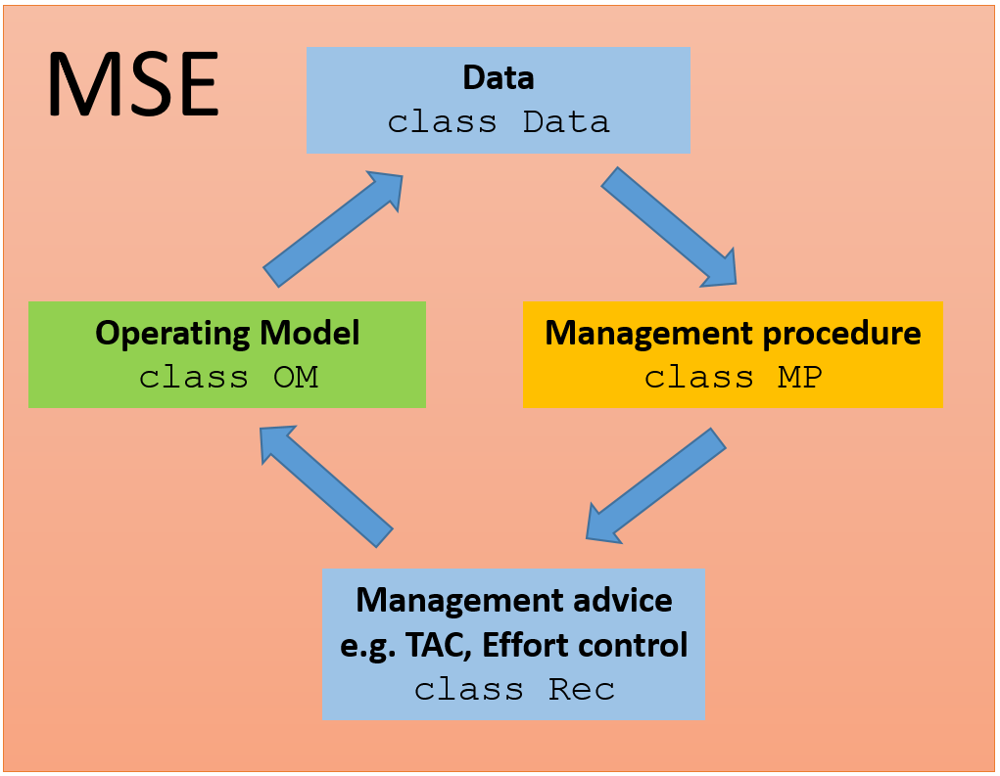
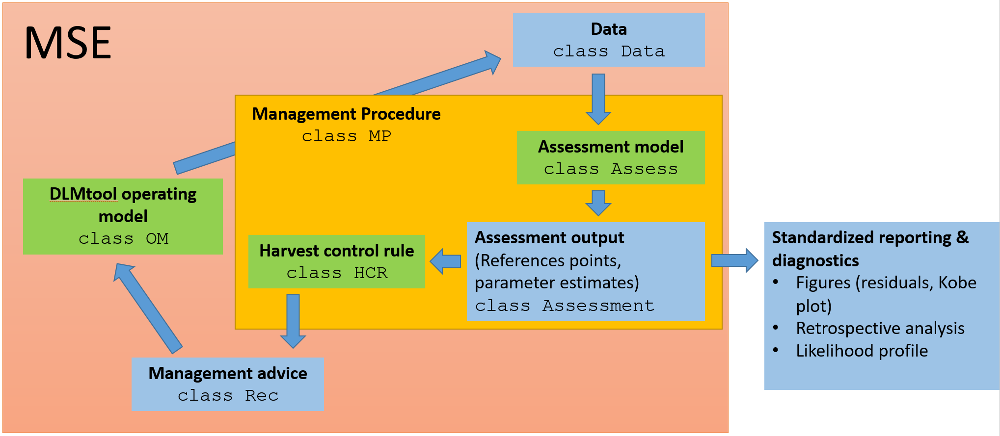
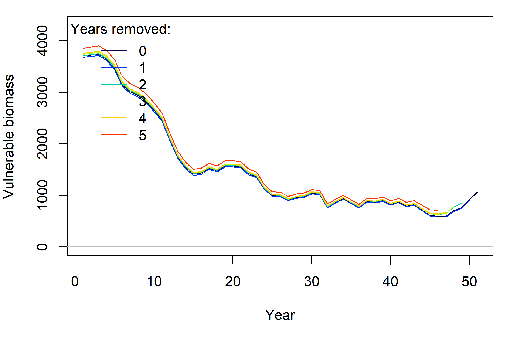
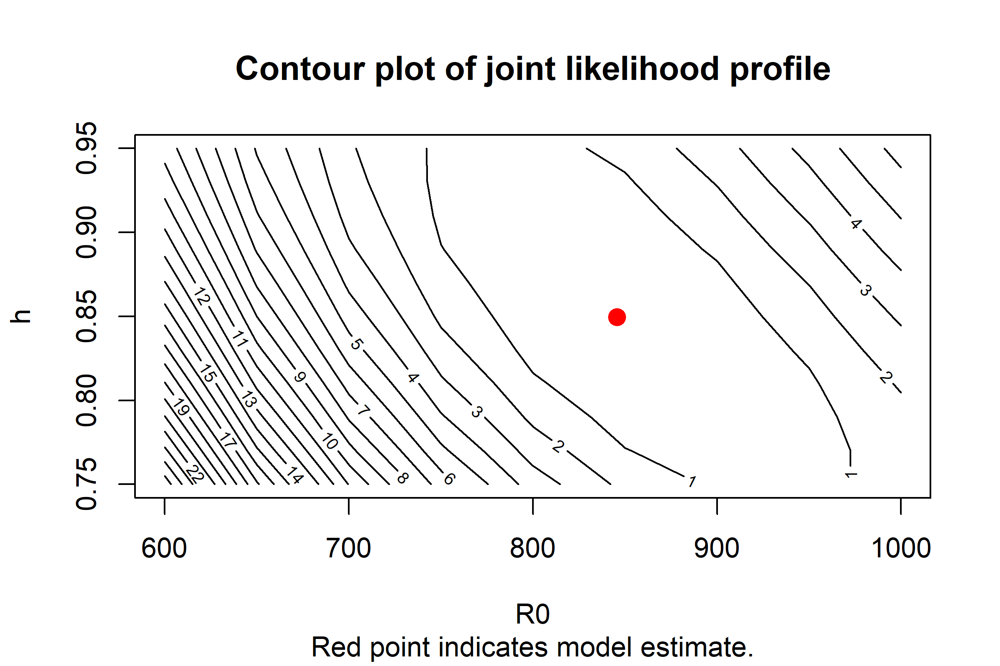
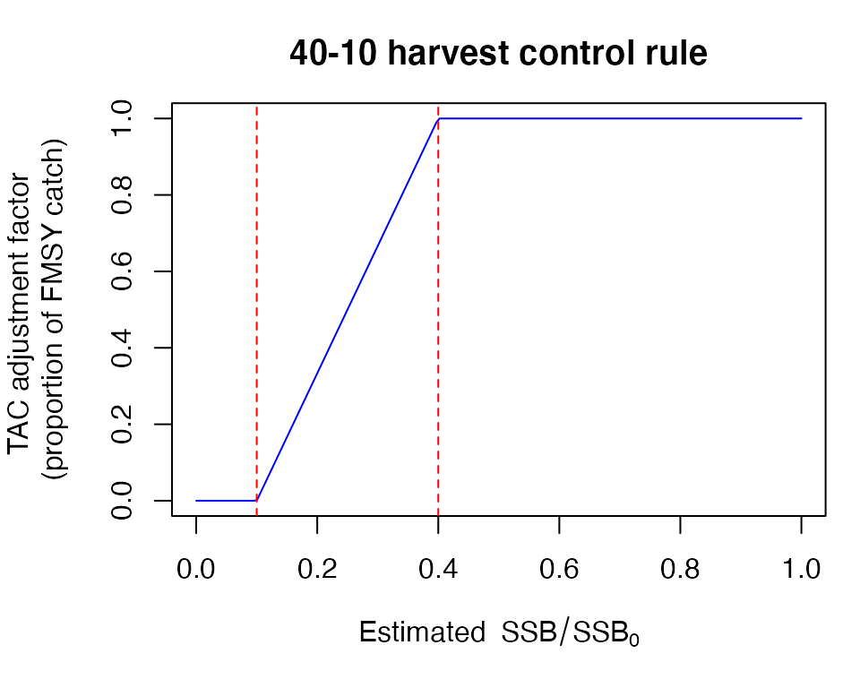
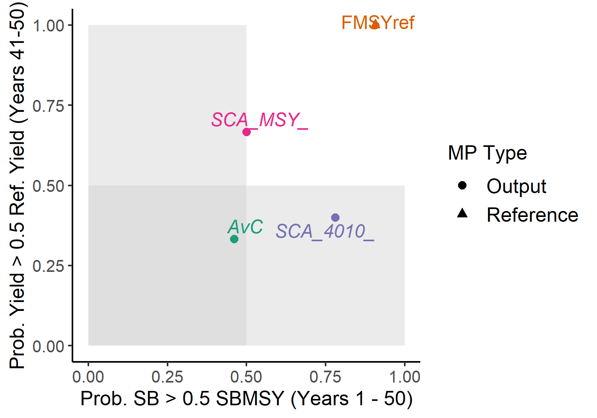
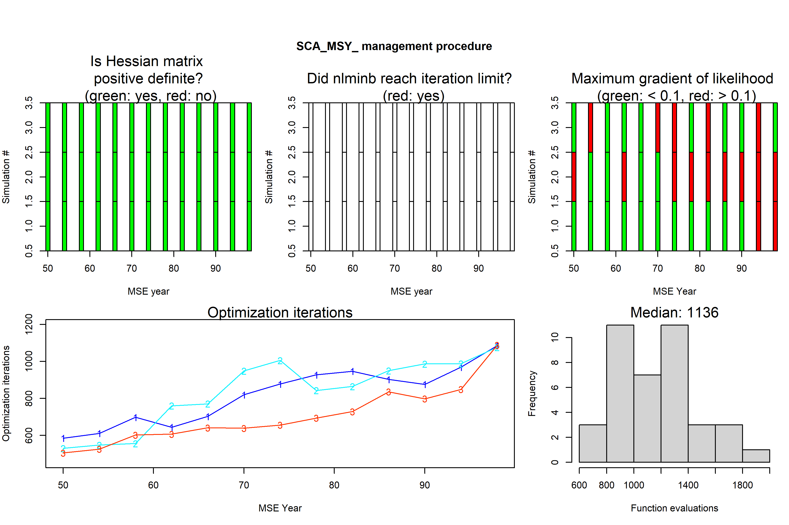
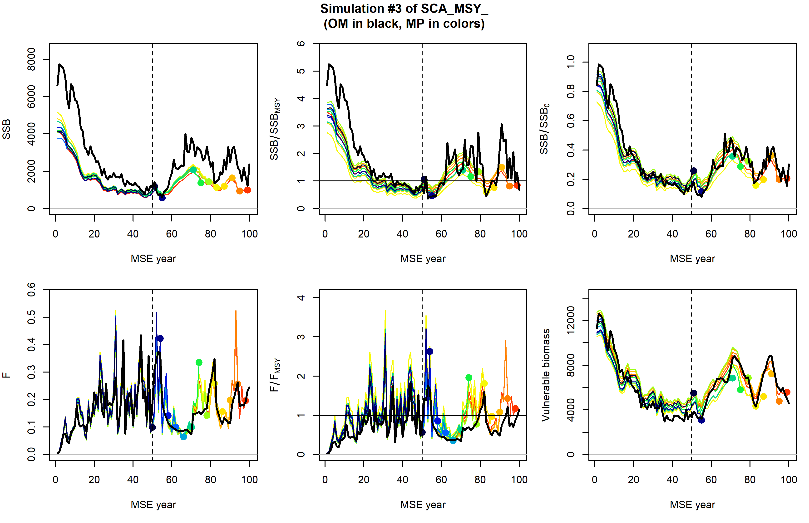

vignettes/SAMtool.Rmd
SAMtool.RmdAs part of openMSE, SAMtool implements closed-loop simulation testing of management procedures (MP), a process used in management strategy evaluation (MSE). The components of the operating model (OM) for conducting MSEs for data-rich stocks is wholly contained within MSEtool, but SAMtool provides the tools for implementing additional features to facilitate model-based MPs. Whereas DLMtool is primarily designed for testing data-limited MPs, SAMtool provides an object-oriented framework for building out data-rich MPs, which typically combine an assessment model with a harvest control rule (HCR) to provide a catch recommendation. MPs created by SAMtool are designed to be used with the operating model of MSEtool through the runMSE function.
The overall structure of a closed-loop simulation for a MSE in MSEtool can be described through the classes deployed in the package. An operating model (class OM object) parameterizes the stock (biology), fleet, observation, and implementation dynamics of the MSE. To begin the MSE, the OM object generates the data to be used for a management procedure and stores them in an object of class Data. A function of class MP uses the Data object and returns an object of class Rec containing the management recommendations, e.g., some combination of spatial closures and size, effort and catch limits. Candidate MPs should not see the operating model and interacts solely with data simulated in the Data object. From the management recommendations, the OM object is updated and the process is successively repeated as the operating model projects forward in time. The output from the closed-loop simulation is returned in an object of class MSE, from which summary statistics can be calculated.

Figure 1: Design of MSEtool package for management strategy evaluations
To facilitate a standardized design for data-rich MPs, SAMtool creates new classes to build out the MP class. SAMtool uses functions of class Assess and HCR for an assessment model and harvest control rule, respectively. An MP class function can be made from these functions to be tested within the MSEtool framework.
Additionally, Assess functions can be used in an assessment-only context (external to closed-loop simulation). Output of an Assess function can be used to provide standardized stock assessment reporting and diagnostics, such as Kobe plots, likelihood profiles for parameter estimates, and retrospective analyses of time series estimates of biomass, fishing mortality, recruitment, etc.

Figure 2: Design of SAMtool package for building management procedures from assessment models and harvest control rules for closed-loop simulation with the MSEtool package. Assess and HCR functions and the Assessment object are unique to SAMtool, but work within the framework of MSEtool. Separate functions are also available for standardized reporting of output from assessment models in a stock assessment setting.
SAMtool provides a conditioning model (RCM, for Rapid Conditioning Model) for generating operating models fitted to data.
Articles with the description of the assessment models and the RCM are available on the openMSE website.
To support multiple-area operating models, the simmov function estimates the movement matrix based on the prescribed number of areas, biomass distribution among areas in unfished conditions, and the probability of staying in each area in the next time step.
Assessment models in SAMtool are functions of class Assess. Currently, the following assessment functions are available:
DD_TMB (Delay-Difference model and its state-space counterpart, DD_SS)cDD (Continuous Delay-Differential model and its state-space counterpart, cDD_SS)SP (Surplus Production model and its state-space counterpart, SP_SS)SCA (Statistical Catch at age model and variants for time varying M: SCA_RWM and SCA_DDM)SSS (Simple Stock Synthesis implementation with fixed terminal depleton assumption)VPA (Virtual Population Analysis)These functions take a Data object as an argument and return an object of class Assessment, for example,
SCA_assessment <- SCA(Data = MSEtool::SimulatedData, fix_h = FALSE, ...)where ... are model configuration arguments. For example, in this SCA model we will try to estimate steepness instead of fixing it to value specified in the Data object.
The Assessment object contains the raw output from TMB estimation model, optimization results from nlminb, and parameter estimates with covariance matrix. If applicable, time series estimates of total biomass, vulnerable biomass, spawning stock biomass, fishing mortality and/or exploitation rate, as well as their corresponding MSY and unfished reference points. The Assessment object also reports likelihood values and predicted values for the data used in the assessment model. The object documentation for the Assessment object can be obtained through:
class?AssessmentDescriptions of the Assess functions are provided in separate vignettes, available:
browseVignettes("SAMtool")Assessment results and summary, along with diagnostic procedures are available for each assessment model. Generic functions summary and plot are available for Assessment objects. The summary function returns a list of estimated current stock status (\(F/F_{MSY}\) , \(B/B_{MSY}\) in the terminal year), input parameters to the model, derived quantities, and parameter estimates. The plot function generates a Markdown report with time series figures of data, fitted data, and estimated quantities (e.g., biomass and recruitment).
plot(SCA_assessment) # By default, also saves figures in a temporary directory for viewing. The directory can be changed to a user's filespace of choice
summary(SCA_assessment)#> $model
#> [1] "Statistical Catch-at-Age (SCA)"
#>
#> $current_status
#> Value
#> F/FMSY 0.5115929
#> SSB/SSBMSY 1.2148562
#> SSB/SSB0 0.3027897
#>
#> $input_parameters
#> Value Description
#> M 0.4147479 Natural mortality
#> maxage 15.0000000 Maximum age (plus-group)
#> Linf 138.5112774 Asymptotic length
#> K 0.1616530 Growth coefficient
#> t0 -1.4063466 Age at length-zero
#> Winf 60.2341128 Asymptotic weight
#> A50 5.4765479 Age of 50% maturity
#> A95 7.4845256 Age of 95% maturityTwo diagnostic functions are available: retrospective for retrospective analyses (re-running the model by sequentially removing terminal years of data) and profile for profiling the likelihood function over a grid of parameters.
retrospective(SCA_assessment, nyr = 5) # Retrospective analysis going back 5 years from current year
profile(SCA_result, R0 = seq(0.75, 1.25, 0.025), h = seq(0.95, 1, 2.5e-3)) # Joint profile over grid of R0 and steepness#> Mohn's rho
#> Fishing mortality -0.095
#> F/F[MSY] -0.085
#> Spawning biomass 0.116
#> SSB/SSB[MSY] 0.088
#> Spawning depletion 0.096
#> Recruitment 0.096
#> Vulnerable biomass 0.082
Figure 3: Retrospective trends in the SCA assessment fit and table of associated Mohn’s rho above.

Figure 4: Joint profile of R0 and steepness from the SCA assessment model. Contours indicate change in likelihood values from minimum (red point).
Harvest control rules in SAMtool are functions of class HCR, and are designed to provide different for a given assessment model. HCR functions take an object of class Assessment and return an object of class Rec. Currently, three HCR functions are available as output controls (catch limits): HCR_MSY, HCR40_10, and HCR60_20. HCR_MSY prescribes the TAC to be the catch predicted with fishing at the estimated \(F_{MSY}\), i.e., the product of \(F_{MSY}\) and estimated vulnerable biomass, while HCR40_10 and HCR60_20 are ramped control rules which reduce the \(F_{MSY}\) catch limit based on spawning depletion \(SSB/SSB_0\).

Figure 5: The 40-10 harvest control rule prescribes an additional reduction in the TAC based on estimated spawning depletion.
SAMtool comes with a set of pre-built model-based MPs:
avail("MP", package = "SAMtool")
#> Searching for objects of class MP in package: SAMtool
#> [1] "DDSS_4010" "DDSS_75MSY" "DDSS_MSY" "SCA_4010" "SCA_75MSY"
#> [6] "SCA_MSY" "SP_4010" "SP_75MSY" "SP_MSY" "SSS_4010"
#> [11] "SSS_75MSY" "SSS_MSY"These MPs use an assessment model and a harvest control rule to come up with a management recommendation (TAC).
The make_MP function is a convenient way to stitch together additional MPs from an assessment model and HCR. This is handy if an assessment model with a different configuration than the default is needed (for example, specify dome vulnerability instead of logistic vulnerability in SCA) or a different harvest control rule is desired. The resulting function can then be passed to MSEtool::runMSE() as a management procedure.
SCA_MSY_ <- make_MP(SCA, HCR_MSY, diagnostic = "full")
SCA_4010_ <- make_MP(SCA, HCR40_10, diagnostic = "full")
myMSE <- MSEtool::runMSE(OM = MSEtool::testOM, MPs = c("FMSYref", "AvC", "SCA_MSY_", "SCA_4010_"))
MSEtool::Tplot(myMSE)
Figure 6. Tradeoff plot between long-term catch and biomass of the SCA with two different HCRs, an average catch MP, and the FMSY reference (perfect FMSY implementation) MP.
Model configuration arguments can be passed through ... in make_MP when the MP is made. For example, the Ricker stock-recruitment relationship can be used in the SCA instead of the default Beverton-Holt relationship and steepness can be fixed instead of estimated by passing argument SR = "Ricker" and fix_h = TRUE, respectively:
SCA_MSY_Ricker_fixsteep <- make_MP(SCA, HCR_MSY, SR = "Ricker", fix_h = TRUE)This MP will call SCA(..., SR = "Ricker", fix_h = TRUE) in closed-loop.
Three functions are designed to evaluate the performance of Assess models in MSE: prelim_AM, diagnostic, and retrospective_AM (where AM stands for “assessment in MSE”).
prelim_AM is designed to evaluate the configuration of the assessment model before running the closed-loop simulation. Given an operating model, this function generates data from the historical period of the MSE, applies the assessment model to those data, then returns the convergence rate of the model. Low convergence rate could be be indicative of an OM for which the assessment model behaves pathologically. A list of Assessment objects are returned and can be used for troubleshooting. Additional arguments are passed to the Assess function via ...:
prelim_AM(MSEtool::testOM, DD_TMB, ...)
#> Running DD_TMB with 3 simulations for testOM.
#> Assessments complete.
#> Total time to run 3 assessments: 0.1 seconds
#> 0 of 3 simulations (0%) failed to converge.By default, assessment model results are not saved during the MSE. However, this feature can be turned on in make_MP, as shown in the following example:
SCA_MSY_ <- make_MP(SCA, HCR_MSY, diagnostic = "full")By setting diagnostic = "min" (the default option), simple diagnostic information (e.g., convergence) from each model fit in closed-loop simulation is returned in the MSE object. With diagnostic = "full", biomass and F estimates are also returned from each model fit in addition to the diagnostics.
The diagnostic function plots the convergence information, and retrospective_AM plots the assessment model’s retrospective patterns (for a single simulation within the closed-loop simulation).
diagnostic(myMSE)
retrospective_AM(myMSE, MP = "SCA_MSY_", sim = 3)
Figure 7. Convergence diagnostics (return by TMB objects and nlminb function) for the DD_MSY MP during the MSE. Here, the assessment model was applied beginning in year 50 of the MSE and repeated every 4th year. In SAMtool, convergence is defined by a positive-definite Hessian matrix (top left figure). In the case of non-convergence, the previous management recommendation is used.

Figure 8. Retrospective analysis of the SCA in the SCA_MSY MP during the MSE for simulation #3. Operating model (true) values of spawning biomass (SSB), relative spawning biomass (SSB_SSBMSY), spawning biomass depletion (SSB_SSB0), fishing mortality (F), relative F (F_FMSY), and vulnerable biomass (VB) are in dark black. Colored lines indicate model estimates sequentially over the projection years. In simulation #3, the SCA tends to underestimate SSB (top left sub-plot).
Once it is determined that the SAMtool assessment models are performing adequately (no major convergence issues), then the performance of the MPs that use these models can be evaluated using performance metrics relevant to management.
SAMtool development is funded by the Canadian Department of Fisheries and Oceans and benefits from ongoing collaborations with the Natural Resources Defense Council and number of Canadian government scientists including Robyn Forrest, Sean Anderson and Daniel Duplisea.
Development of the features in the SAMtool package originated at the University of British Columbia in collaboration with the Natural Resources Defense Council. Further development has been funded by the Gordon and Betty Moore Foundation, the Packard Foundation, U.S. National Oceanic and Atmospheric Administration, Fisheries and Oceans Canada, the Walton Foundation, Resources Legacy Fund, the Natural Resources Defense Council, the United Nations Food and Agricultural Organization and the California Department of Fish and Wildlife.